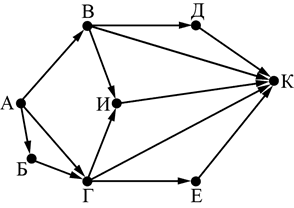

Вариант 2
Задание 1. В кодировке КОИ-8 каждый символ кодируется 8 битами.
Вова написал текст (в нём нет лишних пробелов):
«Мой дядя самых честных правил,
Когда не в шутку занемог…»
Ученик вычеркнул из текста одно слово. Заодно он вычеркнул ставший лишним пробел – два пробела не
должны идти подряд.
При этом размер нового предложения в данной кодировке оказался на 7 байт меньше, чем размер
исходного предложения. Напишите в ответе вычеркнутое слово.
Задание 2. Валя шифрует русские слова (последовательности букв), записывая вместо каждой буквы её код. Коды букв даны в таблице.
| А | Д | К | Н | О | С |
| 01 | 100 | 101 | 10 | 111 | 000 |
Некоторые цепочки можно расшифровать несколькими способами. Например,
00010101 может означать не только СКА, но и СНК.
Даны три кодовые цепочки:
10111101
1010110
10111000
Найдите среди них ту, которая имеет только одну расшифровку, и запишите в ответе расшифрованное
слово.
Задание 3. Напишите количество натуральных двузначных чисел, для
которых истинно высказывание:
НЕ (Число < 88) И НЕ (Число нечётное)
Задание 4. Между населёнными пунктами A, B, C, D, E построены дороги, протяжённость которых приведена в таблице.
| A | B | C | D | E | |
| A | 5 | 9 | 6 | 9 | |
| B | 5 | 3 | |||
| C | 9 | 2 | 2 | ||
| D | 6 | 3 | 2 | 5 | |
| E | 9 | 2 | 5 |
Определите длину кратчайшего пути между пунктами A и E, проходящего через пункт D.
Передвигаться можно только по дорогам, указанным в таблице. Каждый пункт можно посетить только один раз.
Задание 5.
У исполнителя Калькулятор две команды, которым присвоены номера:
1. умножь на 3
2. вычти 5
Первая из них утраивает число на экране, вторая уменьшает его на 5.
Составьте алгоритм получения из числа 1 числа 7, содержащий не более 5 команд.
В ответе запишите только номера команд.
(Например, 21221 –
это алгоритм:
вычти 5
умножь на 3
вычти 5
вычти 5
умножь на 3,
который преобразует число 11 в 24.)
Если таких алгоритмов более одного, то запишите любой из них.
Задание 6. Ниже приведена программа, записанная на пяти языках программирования.
| Бейсик | Python |
|
DIM k, s AS INTEGER INPUT s INPUT k IF s < 5 AND NOT t> 3 THEN PRINT "YES" ELSE PRINT "NO" END IF |
s = int(input()) k = int(input()) if (s < 5) and not (t> 3): print("YES") else: print("NO") |
| Паскаль | Алгоритмический язык |
|
var s, k: integer; begin readln(s); readln(k); if (s < 5) and not (t> 3) then writeln ('YES') else writeln ('NO') end. |
алг нач цел s, k ввод s ввод k если s < 5 и не t> 3 то вывод "YES" иначе вывод "NO" все кон |
| С++ | |
| #include using namespace std; int main() { int s, k; cin >> s; cin >> k; if ((s < 5) && !(t> 3)) cout << "YES" ; else cout << "NO" ; return 0; } |
|
Было проведено 9 запусков программы, при которых в качестве значений
переменных s и k вводились следующие пары чисел:
(2, –2); (–2, 4); (4, 1); (–12, 5); (0, –7); (1, 3); (8, 2); (3, 0); (23, 1)
Сколько было запусков, при которых программа напечатала «NO»?
Задание 7.
Доступ к файлу htm.net, находящемуся на сервере com.edu, осуществляется по протоколу
ftp. Фрагменты адреса файла закодированы цифрами от 1 до 7. Запишите последовательность этих
цифр, кодирующую адрес
указанного файла в сети Интернет.
1) /
2) com
3) .edu
4) ://
5) .net
6) htm
7) ftp
Задание 8. В языке запросов поискового сервера для
обозначения логической операции «ИЛИ» используется символ «|», а для логической операции «И» –
символ «&».
В таблице приведены запросы и количество найденных по ним страниц некоторого
сегмента сети Интернет.
| Запрос | Найдено страниц (в тысячах) |
| Динамо & (Зенит | Спартак) | 840 |
| Динамо & Зенит | 530 |
| Динамо & Зенит & Спартак | 130 |
Какое количество страниц (в тысячах) будет найдено по запросу Динамо & Спартак?
Считается, что все запросы выполнялись практически одновременно, так что набор страниц, содержащих все искомые слова, не изменялся за время выполнения запросов.
Задание 9.
На рисунке – схема дорог, связывающих города А, Б, В, Г, Д, Е, Ж и К. По каждой дороге можно
двигаться только в одном направлении, указанном стрелкой. Сколько существует различных путей из
города А в город К?

Задание 10.
Переведите число 135 из десятичной системы счисления в двоичную систему счисления.
Сколько нулей содержит полученное число? В ответе укажите одно число – количество нулей.
Задание 11.
В одном из произведений А.С. Пушкина, текст которого приведён в подкаталоге каталога Проза, есть
персонаж по фамилии Берестов.
С помощью поисковых средств операционной системы и текстового редактора или браузера выясните, как
называется имение, в котором живёт этот человек.
Задание 12.
Сколько файлов с расширением .rtf содержится в подкаталогах каталога DEMO-12?
В ответе укажите только число.